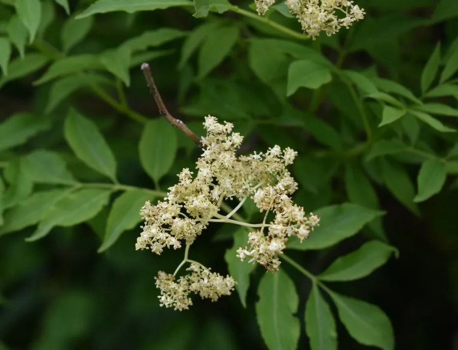

灌木与花木 · 植物界
接骨木 Sambucus williamsii

忍冬科落叶灌木，初夏开白色伞房花序，秋季结红色浆果，全株可入药，是北方常见的药用与观果灌木。
- 分类
- 门被子植物门纲木兰纲目川续断目科忍冬科属接骨木属
- 栖息环境
- 山坡林下、溪边、村旁与灌丛，喜光也耐半阴
- 地理分布
- 中国东北、华北、华东至西南各地
- 保护级别
- 暂无评估；中国未列入国家重点保护野生植物名录
物种志
接骨木为忍冬科接骨木属落叶灌木，高 3–5 米，老枝有皮孔，髓部白色。叶对生，奇数羽状复叶，小叶 5–7 枚，卵形至长圆形，边缘具锯齿。伞房状聚伞花序顶生，花小，白色至淡黄色，花期 5–6 月；果实为浆果状核果，球形，成熟时红色，果期 8–9 月。
接骨木原产中国东北、华北、华东至西南各地，生于山坡林下、溪边和村旁。它喜光，也耐半阴，耐寒、耐旱，对土壤要求不严。夏季白花满树，秋季红果累累，是观花观果兼用的乡土灌木；茎枝入药称“接骨木”，有祛风利湿、活血止痛之效，但果实与茎叶含少量毒性成分，不可随意食用。接骨木也是城市公园中常见的观果灌木。
形态与习性
- 株高3–5 米，髓部白色
- 花期5–6 月，白色伞房花序
- 果期8–9 月，浆果状核果红色
- 光照喜光，也耐半阴
- 水分耐旱，喜湿润
- 土壤对土壤要求不严
- 主要用途观花观果，茎枝入药
趣味知识
- 接骨木的茎枝入药，传统上用于跌打损伤，因此得名。
- 夏季开白色伞房花序，秋季结红色浆果，花果兼赏。
- 它的果实与茎叶含少量毒性成分，不可随意采食。
- 接骨木是北方常见的乡土灌木，常生于村旁与溪边。